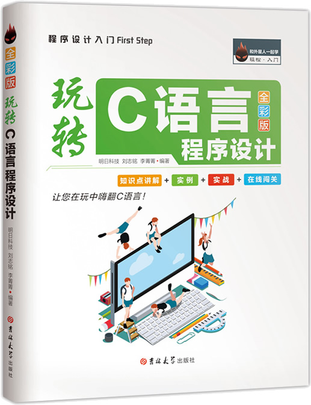

首页 > 书籍下载
《玩转C语言程序设计》全彩版PDF下载（高清完整版）
|  | 作者：明日科技(Mingri Soft) |
| 出版时间：2018年07月01日 | |
| 出版社：吉林大学出版社 | |
| 书号ISBN：9787569226096 | |
| 总页数：224 | |
| 总字数：25W |
这是一本专为初学者编写的 C 语言书籍，内容贴近生活、通俗易懂，实例丰富多彩、趣味十足，致力于让读者快读入门 C 语言。
这里提供的是《玩转C语言程序设计》全彩版的高清 PDF 下载，内容完整，附带目录标签。
和其它同类的 C 语言书籍不同，这本书并不是按部就班地讲解知识点，而是将编程和生活紧密联系，让读者体会到生活中的很多事情都可以用编程来解决，提高读者的编程兴趣，兴趣是最好的老师。
下面是一位购买了这本书的读者给出的评价：
室友发现的这本书，先买一本回来看看，结果买回来一看，大吃一惊！太赞了，明天跟室友一起做闯关测试了！我俩都是小白，希望能逆袭。
还有一位读者也给出了好评：C语言入门类图书里，这本书绝对是值得推荐的！在入门阶段，最重要的就是先培养兴趣！有兴趣了才能学进去更有深度的东西，极力推荐！
书籍目录
- 第1章 C 语言从这里开始
- 1.1 认识C语言的强大
- 1.2 常用C语言开发环境
- 1.3 一个完整的C语言开发过程
- 1.4 分析C程序的构成
- 1.5 小试牛刀
- 1.6 答题闯关大作战
- 第2章 C 语言语法基础
- 2.1 标识符
- 2.2 关键字
- 2.3 程序注释
- 2.4 常量和变量
- 2.5 聚焦数据类型
- 2.6 自动转换和强制转换
- 2.7 小试牛刀
- 2.8 答题闯关大作战
- 第3章 程序基本构件之运算符
- 3.1 算术运算符
- 3.2 自增、自减运算符
- 3.3 关系运算符
- 3.4 逻辑运算符
- 3.5 位 运 算 符
- 3.6 用“=”赋值
- 3.7 逗号运算符
- 3.8 运算符优先级
- 3.9 小试牛刀
- 3.10 答题闯关大作战
- 第4章 选择流程控制
- 4.1 if语句
- 4.2 if语句嵌套
- 4.3 有条件的三目运算符
- 4.4 多种选择switch语句
- 4.5 小试牛刀
- 4.6 答题闯关大作战
- 第5章 循环控制语句
- 5.1 当型循环：while语句
- 5.2 直到型循环：do…while语句
- 5.3 升级版循环：for语句
- 5.4 循环里套循环
- 5.5 转移语句
- 5.6 小试牛刀
- 5.7 答题闯关大作战
- 第6章 数组的简历
- 6.1 一维数组
- 6.2 二维数组
- 6.3 字符数组
- 6.4 多维数组
- 6.5 小试牛刀
- 6.6 答题闯关大作战
- 第7章 字符串处理技术
- 7.1 字符串复制—strcpy()函数
- 7.2 字符串连接——strcat()函数
- 7.3 获取字符串长度—strlen()函数
- 7.4 字符串比较—strcmp()函数
- 7.5 字符串大小写转换
- 7.6 小试牛刀
- 7.7 答题闯关大作战
- 第8章 自主创建模块函数
- 8.1 函数简介
- 8.2 函数的参数分类
- 8.3 函数的调用
- 8.4 变量的作用域
- 8.5 小试牛刀
- 8.6 答题闯关大作战
- 第9章 指针—指向内存地址的变量
- 9.1 什么是指针
- 9.2 数组与指针的关系
- 9.3 指针的指针**p
- 9.4 指针作为函数参数
- 9.5 小试牛刀
- 9.6 答题闯关大作战
- 第10章 结构体与共用体
- 10.1 结构体
- 10.2 链表
- 10.3 共用体
- 10.4 小试牛刀
- 10.5 答题闯关大作战
- 第11章 文件I/O 流
- 11.1 文件流
- 11.2 文件的写（输出）操作
- 11.3 文件的读（输入）操作
- 11.4 文件的定位
- 11.5 小试牛刀
- 11.6 答题闯关大作战
- 附录
- 附录1 答题闯关大作战答案与解析
- 附录2 常用字符与ASCII代码对照表
书籍下载
一键登录，免费下载完整版 PDF，文件名称：《玩转C语言程序设计》全彩版.pdf